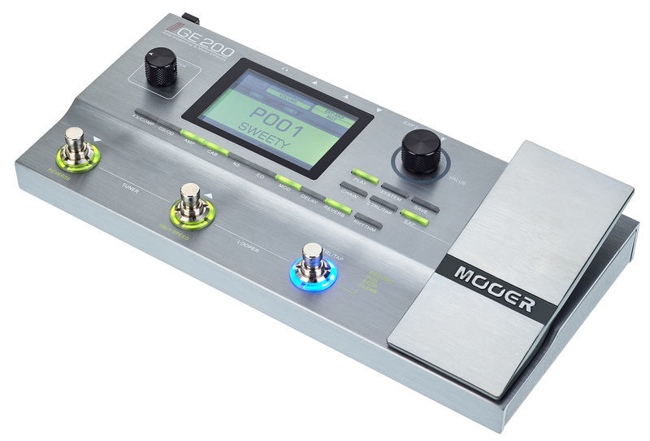
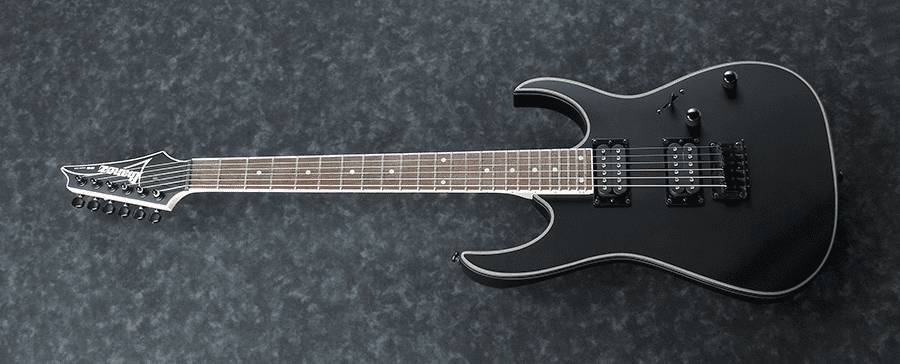
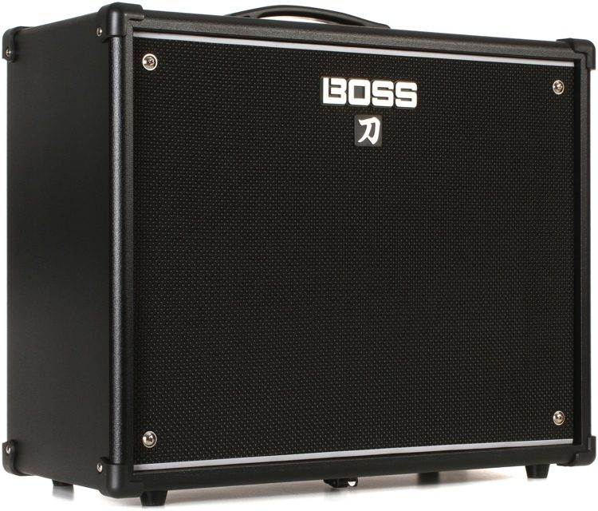

En sus inicios en la banda, obtuvo el rol de bajista, el cual mantuvo entre el primer y segundo año de la banda. Más adelante, por razones de composición pasó a ser guitarrista ambiente, y encargarse de los arpegios en limpio dentro de las canciones, y los pequeños añadidos para las canciones mientras se formaba como guitarrista. Actualmente tras cambios en la alineación y en el equipo personal, paso a ser guitarrista juntamente con Adrián Matemalas. Desde los 6 años estudiaba música, y recibió formación en guitarra clásica (española) a una corta edad. Siempre se ha dedicado a la música, ya sea el canto, tocar un instrumento, o ahora que se dedica más al género del metal por la banda.
El equipo amplificador que usa es el Boss Katana 100 V1, amplificador de transistores muy versátil a la hora de crear presets para live, ya que cuenta con multiples simulaciones de efectos de los clásicos pedales de la casa Boss, juntamente con una opción secreta de simulador de amplificadores, y un modificador del "aire" de la salida de audio del cono. Actualmente no utiliza esos efectos debido a más piezas del equipo con las que cuenta, pero los ha estado usando en la mayor parte de los primeros 5 conciertos realizados.
En los tiempos donde ejercía de bajista contaba con un bajo SX FPB-57 BK. Cuando derivó a guitarra clean, usaba una guitarra restaurada de práctica estilo Telecaster de marca blanca. Finalmente ha adquirido su actual instrumento principal: una Fender Squier Jazzmaster Affinity BK, la cual usa tanto en ensayos como en conciertos.
Durante mucho tiempo, simplemente ha usado un footswitch Boss FS-6, y un afinador marca blanca de Amazon. Actualmente ha adquirido una pedalera de emulacion de amplificadores y multiefectos; la Mooer GE200. Esta versátil pedalera de efectos tiene todo lo que se necesita para un liveset sólido, desde un noise supressor, hasta afinador incorporado o botones de activación de cadenas de efectos en un preset. Principalmente se está trabajando en tener un preset de distorsión, y otro de limpio para cada canción de EP.
Cabe mencionar que durante mucho tiempo simplemente ha usado un sistema de jack normal sin mucha complicación. Hace unos meses empezó a usar en algunos ensayos y lives un sistema de inalámbrico llamado Line6 Relay G30, con un rango de 15 metros de radio. En cuanto a lo que se refiere a sistema de in-ears, de momento no usan de ningún tipo.
|  |  |  |